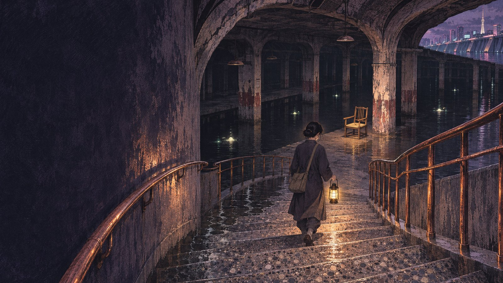
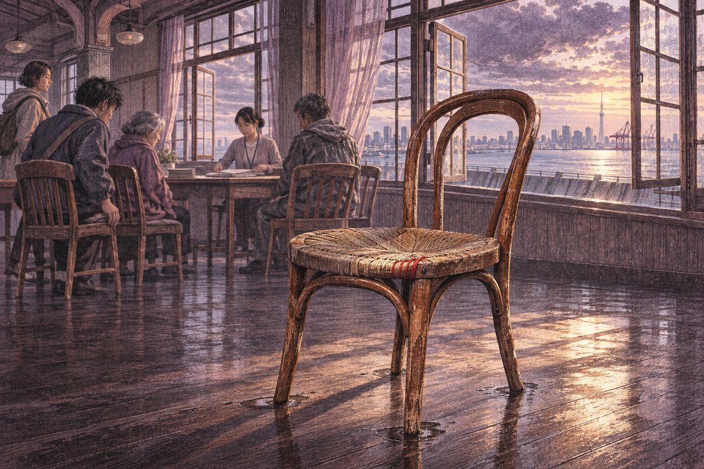

近未来スピリチュアルSF考察
P＝NPが証明された世界
黄泉から
持ち帰った椅子
母の三回忌に、市は母から土地を買った。
午前四時十二分の署名
二〇四六年、東京湾岸の汐見市。東堤の護岸工事に伴う移転同意書が、まだ暗いうちに届いた。署名時刻はその日の午前四時十二分。私は仏壇の湯呑みを取り替えて、母の名前の横に光る「本人確認済み」の四角を、指で二度押した。二度とも同じ青だった。
二年前にP＝NPが証明され、その春には市の帳簿ほどの大きさでも役に立つ解法が出た。何週間もかかった避難住宅の割り当てが、朝のお茶を淹れる間に決まった。同じ春、市が古くから使っていた電子署名も信用を失った。東堤の売却に賛成する書面と反対する書面が並んで届き、どちらの署名も照合を通った。
配給所は、本人を知る隣人を二人連れてくるよう求めた。越してきたばかりの家から米が尽きた。混乱のさなかにも、工事の買収手続きだけは予定どおり進んだ。「期限までに有効な署名が一通あれば同意とみなす」。あの規程の末尾に起案印を押したのは、若い頃の私だった。
黄泉の待合室
東堤の下には、高潮で廃線になった駅がある。盆の晩には、亡くなった人の名を一段にひとりずつ呼んで、階段を降りる。子どもの頃は踊り場で引き返した。その夜は灯りを借り、母の名を呼んで、初めて水の下の段に足を置いた。靴は沈んだのに、裾は濡れなかった。
改札の向こうで、母が待合室の椅子を繕っていた。切れた藺草に赤い糸を渡し、結び目を座面の裏へ押し込む。生きていた頃と同じ、左の親指の使い方だった。私は同意書を膝の上に広げた。
「母さん、あの家を売りたかったの」
「二階を借りてる子には、もう聞いたのかい」
口を開けたまま、私は地上の台帳を思い浮かべた。土地一筆、所有者一名、署名一件。二階へ上がる外階段は図面にあった。その階段を誰が使うかを書く欄がなかった。顔を上げると、母のいたところに椅子が一脚残っていた。背負うとずいぶん重かった。上りは一段ずつ、膝に角が当たった。

空席のある議場
市庁舎に椅子を運び込んだ朝、玄関にはもう行列ができていた。薬局の店主は二通の廃業届を、夜勤明けの女の人は差出人の違う三通の立ち退き通知を持っていた。私が母の返事を話すと、列の後ろから声がした。「うちの死んだ父も反対していたことにしてくれるのか」。私は首を振った。あの晩、私が聞けたのは、ひとつの問いだけだった。
その秋、代行統治局は解散し、住民投票で新しい市憲章が成立した。予算や条例を決める市議会に、もう一つの機関が加わった。名は「空席院」。くじで選ばれた市民と、案件ごとに当事者が選ぶ代表が同じ机に着く。母の椅子はその輪の一脚になり、採決の日も空けておくことになった。
空席院には「誰かの意思が推定で埋められた」と申し立てる窓口がある。住民票は要らない。一人分でも根拠が示されれば、院は決定を一度、七日間差し戻せる。市議会はその間に当人の話を聞き、元の案を通すなら理由と採決者の名を公にする。高潮の夜の避難命令はすぐに出せる。ただし四十八時間で失効し、延長には公開の審議が要る。
黄泉から帰った私を神託の取次人にすれば、町は古い認証局をひとりの人間に置き換えただけになる。椅子を空けておく決まりは、まず私を縛る。あの晩の潮の匂いをどれほどよく覚えていても、私の手には母の一票はない。
七日目の議事録
最初に戻ってきたのは、東堤の十二軒の買収案だった。母の家の二階に住む女性は、製氷所の夜勤を終えてから話しに来た。「移りますよ。うちのお父ちゃんが自分で入れる、一階の部屋なら」。それだけ言って、長靴のままパイプ椅子で眠った。書記は図面の外階段に丸をつけ、転居先の条件に「段差のない玄関」と書いた。
七日のあいだ工事船は岸壁で待ち、待機料は市の負担になった。七日目、新しい条件を満たす住まいが見つかった。計算には三分もかからなかった。同じ計算機は初日から庁舎にあった。時間がかかったのは、夜勤の終わる時刻まで議場の扉を開けておく、と私たちが決めることだった。
市は母の同意書を取り消した。新居の鍵が二階の人に渡った日、相続人の私は自分の名で契約書に署名した。母があの家を売りたかったのか、私は今も知らない。議事録の母の名の横には「本人に聞けず」と書いた。閉会後、私はいつも最後に、空いた椅子の脚の下を拭く。晴れの日が十日続いた今日も、布にはうっすらと潮の匂いが移った。